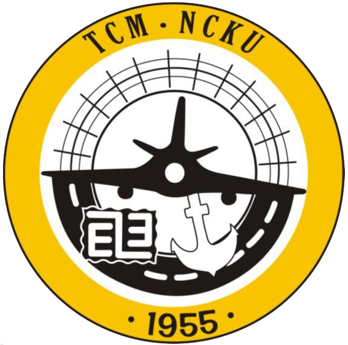

Sitemap
Chinese
Home
NCKU Home
Faculty of Management
Transportation Newsletter
Sitemap
1 . Profile
1.1 . Future Outlook
1.2 . Vision
2 . Members
3 . New Letters
4 . Courses
4.1 . Undergraduate Courses
4.2 . Graduate Course
5 . Intern
6 . Graduate Threshold
7 . Job Development
8 . About TCM
9 . Service and Contribution
